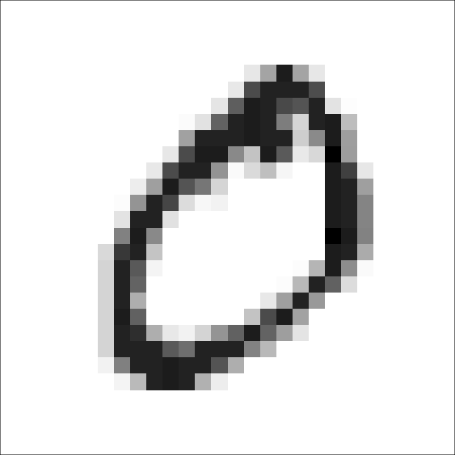
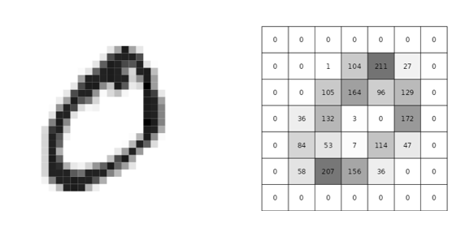

Nogle gange har man brug for, at håndskrevet tekst kan digitaliseres. Det kan for eksempel være i en eksamenssituation, hvor din lærer og censor skriver din karakter på en liste, som efterfølgende skal tastes ind på en computer. Det ville være smart, hvis man kunne scanne listen eller tage et billede af den, hvorefter alle tal korrekt vil blive genkendt (så du ikke får en forkert karakter!). Dette forløb handler om, hvordan det kan gøres.
RGB-farvemodellen
Vi skal først se lidt på, hvordan billeder bliver repræsenteret i en computer. Prøv at finde et billede på din computer og zoom ind så meget som muligt. Du vil opdage, at billedet i virkeligheden består en masse små kvadrater, som hver især har én farve. Sådan et kvadrat kaldes for en pixel.
Hver pixel består af tre subpixels. Den første subpixel kan lyse Rød, den anden Grøn og den trejde Blå:
Figur 1: Subpixel.
Fordi alle farver bliver repræsenteret ved disse tre farver, taler man om en RGB-farvemodel.
Vi kan skrue på lysstyrken i hver af de tre subpixels. Hvis der er skruet fuldt op for farven, er værdien 255, mens helt slukket svarer til værdien1 0.
1 Tallene fra 0 til 255 kan i det binære talsystem repræsenteres ved 8 bits svarende til 1 byte, fordi \(2^8=256\).
Vores øje opfatter ikke farven på de tre subpixels individuelt, men vi ser i stedet se en blandingsfarve. Hvis der for eksempel er skruet fuldt op på alle tre farver, så vil vores øje opfatte det som hvid. Det vil sige, at den pixel, som er vist i figur 1 vil lyse hvid for os!
Skruer vi helt op for rød og blå, men slukker for grøn fås en pink farve (som kaldes for magenta):
Figur 2: Farven magenta - repræsenteret ved rgb(255,0,255).
Farven skrives:
rgb(255,0,255)
Hvis der er skruet lige meget op for den røde, grønne og blå subpixel, fås forskellige nuancer af grå. Det er der vist eksempler på her:
Figur 3: Forskellige toner af grå.
Det betyder, at hvis man udelukkende er interesseret i gråskalaværdier, så kan vi nøjes med én værdi, som er den fælles værdi for rød, grøn og blå:
Figur 4: Forskellige toner af grå repræsenteret ved én værdi.
MNIST datasættet
Der findes et stort datasæt – det såkaldte MNIST datasæt2, hvor man har samlet 60000 håndskrevne cifre. Datasættet består af 60000 rækker, som hver repræsenterer et håndskrevet ciffer mellem \(0\) og \(9\). Der er i alt 785 kolonner. Den første kolonne kaldet "label" angiver hvilket ciffer, der er tale om. Det er den værdi, som vi i sidste ende gerne vil kunne forudsige. En sådan værdi kaldes også for en targetværdi. De resterende 784 kolonner angiver gråskalaværdierne fra et \(28 \times 28\) pixel billede af et håndskrevet ciffer.
2 MNIST står for "Modified National Institute of Standards".
På figur 5 ses et håndskrevet "0" fra MNIST datasættet.
Figur 5: Et håndskrevet "0" fra MNIST datasættet.
Bemærk, at der er skrevet med hvid på sort baggrund. Når vi i det følgende viser billederne af de håndskrevne tal, har vi valgt at vende farveskalaen om, så vi i stedet for gråskalaværdien \(x\) tegner en pixel med gråskalaværdi
\[
255-x
\]
Det betyder, at vi i stedet for sort viser hvid og omvendt. Dette er illustreret på figur 6.

Figur 6: Et håndskrevet "0" fra MNIST datasættet, men hvor farveskalaen er vendt om.
Vi skal nu prøve, om vi ud fra de 784 gråskalaværdier kan "udvinde" nogle få, men sigende værdier, som kan bruges til at forudsige, hvilket ciffer der er på billedet. I første omgang vil vi prøve, om vi kan kende forskel på 0- og 1-taller.
Det første, vi vil gøre, er at lave billederne i en lavere opløsning svarende til, at billederne bliver mere pixeleret. Vi vil for eksempel lave et \(7 \times 7\) pixel billede ved at inddele det oprindelige \(28 \times 28\) pixel billede i \(2 \times 2\) pixels, hvor vi så tager gennemsnittet af de fire pixelværdier. Et eksempel på det ses i figur 7:

Figur 7: Et billede af et 0 med en oprindelige opløsning på \(28 \times 28\) pixels og det samme billede i en opløsning på \(7 \times 7\) pixels.
Til trods for at billedet er meget mere pixeleret, kan man faktisk stadigvæk tydeligt se konturerne af 0’et. Til sammenligning er et billede af et 1-tal vist i figur 8:
Figur 8: Et billede af 1 med en oprindelige opløsning på \(28 \times 28\) pixels og det samme billede i en opløsning på \(7 \times 7\) pixels.
Kan vi kende forskel på 0 og 1?
Idéen er, som nævnt tidligere, at vi ud fra \(7 \times 7\) billederne vil udvinde nogle nye og få værdier, som kan bruges til at kende forskel på \(0\)- og \(1\)-tallerne. Vi vil altså gerne koge de ialt 49 pixelværdier ned til en til tre værdier, som er nok til at adskille 0 fra 1. Sådanne værdier kaldes for features.
NoteOpgave 1: Beregning af features
Det kunne godt se ud som om, at der bruges flere farvede pixels på at skrive et 0, end der bliver brugt på at skrive et 1-tal. Vi vil derfor helt enkelt udregne den gennemsnitlige pixelværdi af hele billedet:
Udregn den gennemsnitlige pixelværdi for nedenstående to billeder:
Et andet bud på en simpel feature er at tælle hvor mange pixels, der er helt hvide (det vil her sige med en pixelværdi på 0, fordi vi har vendt farveskalaen om). Vi vil nemlig forvente, at et 1-tal fylder mindre end et 0, så antallet af helt hvide pixels må forventes at være større på billederne af 1-taller.
Tæl antallet af helt hvide pixels på ovenstående to billeder.
Vi har nu beregnet to forskellige features for de to billeder. Er værdierne som forventet?
Det er klart, at den gennemsnitlige pixelværdi og antallet af helt hvide pixels hænger sammen. Forklar med ord hvilken sammenhæng, man vil forvente.
Det bliver selvfølgelig lidt møjsommeligt at udregne disse to features for mange billeder. Derfor skal vi nu bruge en app, som gør arbejdet for dig.
Øverst kan du vælge hvilket ciffer fra MNIST datasættet, du vil se. Dernæst kan du vælge pixelopløsning (\(7 \times 7\), \(14 \times 14\) eller det oprindelige \(28 \times 28\)). Herefter kan du vælge, om du vil have vist pixelværdierne på det pixelerede billede eller ej. Endelig kan du trykke på "Forrige billede" eller "Næste billede" for at bladre i de forskellige billeder fra MNIST datasættet.
Start med at bladre lidt rundt blandt de forskellige cifre, så du får et indtryk af datasættet.
I tabellen under det oprindelige billede, kan du se de to features "pixel_gns" og "antal_tomme", som er de to features, du udregnede i opgave 1.
Det første 0 (med et id på 0) og det første 1-tal (med id på 100) svarer til de to billeder, som du regnede på i opgave 1. Kontrollér, om du har regnet rigtigt (Obs! Den gennemsnitlige pixelværdi, som bliver vist i app’en, er baseret på det oprindelige \(28 \times 28\) billede, så der kan være mindre afrundingsfejl i dit resultat)!
NoteOpgave 3: Download af datasæt
Vi skal nu have downloadet et datasæt, hvor disse to features er udregnet for i alt 100 billeder af henholdsvis 0 og 1-taller.
Gå til fanen "Download". Her vælger du:
En pixelopløsning på 7.
Sæt flueben ved 0 og 1.
Under "Hele billedet" sætter du flueben både ved "Gennemsnit" og "Antal tomme pixel".
Resten af fluebenene fjerner du.
Tryk på "Download data".
Når du åbner datasættet i Excel, skulle det gerne se sådan her ud:
Den første kolonne ("label") angiver, om der er tale om et billede af et 0 eller et 1-tal. Den anden kolonne ("id") er billedets id (det kan du bruge til at få vist billedet i app’en), de to sidste kolonner ("pixel_gns") og ("antal_tomme") svarer til de features, som vi beregnede i opgave 1.
NoteOpgave 4: Boksplots
Vi vil starte med at undersøge de to features hver for sig.
Gennemsnitlig pixelværdi
Bestem det udvidede kvartilsæt for "pixel_gns" for både 0 og 1.
Tegn i samme figur et boksplot af "pixel_gns" for både 0 og 1.
Forklar niveau- og spredningsforskelle i de to boksplots.
Antal hvide pixels
Gentag ovenstående, men for "antal_tomme".
Vil man kunne bruge enten "pixel_gns" eller "antal_tomme" alene til at kende forskel på 0 og 1?
NoteOpgave 5: Plot af to features
Lav et punktplot med "pixel_gns" ud af \(x\)-aksen og "antal_tomme" op af \(y\)-aksen. Sørg for at alle punkter, som svarer til billeder af 0’er er farvet røde og alle punkter, som svarer til billeder af 1-taller er farvet blå.
Sådan gør du i GeoGebra
Åbn datasættet i Excel og kopiere det hele over i et "Regneark" i GeoGebra (tryk på "Vis" \(\rightarrow\) "Regneark").
Stil dig i celle E2 (det skulle gerne være den første tomme celle i anden række).
Skriv (C2,D2) (det skulle give dig værdien for "pixel_gns" og "antal_tomme" for det første billede).
Markér cellen. Tag ved den lille firkant nederst til højre og træk ned, så du får punkter for alle 200 billeder.
Justér på akserne på tegneblokken, så du kan se alle punkterne. Markér alle punkterne, højreklikke og trykke på "Basis". Sæt flueben ved "Fast objekt" (det sikrer, at du ikke ved en fejl kan flytte på punkterne). Hvis der er vist et navn ved punkterne i tegneblokken, fjerner du også fluebenet ved "Vis navn".
Markér alle de punkter i regnearket, som har en "label" værdi på 0. Højreklik og vælg "Egenskaber". Under fanen "Farve" vælger du rød.
Farv på tilsvarende måde alle punkterne med en "label" værdi på 1 blå.
Højreklik på tegneblokken og vælg "Tegneblok". Gå ind under fanen "xAkse". Under "Navn" skriver du "pixel gns" og tilsvarende navngiver du \(y\)-aksen "antal tomme".
NoteOpgave 6: Klassifikation baseret på en eller to features
Vi vil starte med at undersøge, om vi kan kende forskel på 0 og 1 alene baseret på én af de to features.
Brug det punktplot, som du lavede i opgave 5.
Gennemsnitlig pixelværdi
Indtegn en lodret linje ved for eksempel at skrive \(x=20\). Hvilken lodret linje er bedst til at adskille de blå punkter fra de røde?
Hvor mange punkter kommer som minimum til at ligge på den forkerte side af linjen?
Find id’et på de punkter, som ligger på den forkerte side af linjen. Man siger, at disse punkter er blevet klassificeret forkert. Brug app’en til at få vist et billede af disse tal. Kan du forklare, hvorfor disse billeder bliver klassificeret forkert, når vi ser på pixel gennemsnittet alene?
Tabellen herunder kaldes for en confusion matrix.
Klassificeret som 0
Klassificeret som 1
Faktisk 0 (rød)
Faktisk 1 (blå)
Se på dit punktplot og udfyld på den baggrund en confusion matrix (husk, at der er 100 røde og 100 blå punkter).
Klassifikationsnøjagtigheden (CA for classification accuracy på engelsk) angiver hvor stor en procentdel af data, som er blevet klassificeret korrekt.
Vi vil nu undersøge, hvor mange billeder vi kan klassificere korrekt, ved kun at se på antallet af hvide pixels i billedet.
Indtegn en vandret linje ved for eksempel at skrive \(y=20\).
Svar på de samme spørgsmål som ovenfor, men nu baseret på den vandrette linje.
Begge features
Til sidst vil vi prøve at undersøge, om vi kan gøre det bedre ved at bruge begge features.
Indtegn en ret linje i koordinatsystemet (gør det for eksempel i GeoGebra ved at trykke på ikonet "Linje", hvor man kan tegne en ret linje gennem to punkter. På den måde er det nemt at justere på linjen ved at flytte på de to punkter).
Svar på de samme spørgsmål som ovenfor, men nu baseret på den generelle rette linje.
3 Man får her en forholdsvis høj klassifikationsnøjagtighed. Det er i virkeligheden lidt snyd. Vi finder nemlig ud af, hvor god modellen er til at klassificere de billeder, som modellen er trænet på. I virkeligheden bør man undersøge, hvor god modellen er til at klassificere nye, ukendte billeder. Et sådant datasæt med nye og ukendte billder kalder man for et testdatasæt. Det kan du læse mere om i noten Overfitting, modeludvælgelse og krydsvalidering.
I opgave 6 ovenfor kom du formentlig frem til, at hvis vi alene skal adskille 0’er fra 1-taller, så er det faktisk nok at tælle antallet af hvide pixels i billedet! Gør vi det, kan vi med vores træningsdata få en klassifikationsnøjagtighed på \(98.5\%\).
NoteOpgave 7: Hjælper det med højere opløsning? (valgfri)
Undersøg, om du kan få en højere klassifikationsnøjagtighed ved at bruge en pixelopløsning på \(14 \times 14\) eller \(28 \times 28\) pixels.
Hvad med 0 og 3?
Det går jo strygende! Tæl antallet af hvide pixels i billedet, og du kan kende forskel på 0 og 1. Men hvad nu, hvis vi vil kende forskel på 0 og 3. Går det mon lige så nemt? Et eksempel på et håndskrevet 0 og 3-tal er vist i figur 9.
Figur 9: Et billede af et håndskrevet 0 og 3-tal med en opløsning på \(28 \times 28\) pixels.
Lad os prøve igen med de to features: gennemsnitlig pixelværdi og antal hvide pixels.
Start med at bladre lidt rundt blandt 3-tallerne, så du får en fornemmelse for, hvordan de er skrevet.
Download et datasæt bestående af 0 og 3-taller i en pixelopløsning på \(7 \times 7\) pixels.
NoteOpgave 9: Punktplot
Lav et punktplot af de to features (gennemsnitlig pixelværdi og antal hvide pixels), som du gjorde det i opgave 5. Farv alle de punkter, som svarer til billeder af 0 røde, og farv alle de punkter, som svarer til billeder af 3-taller grønne.
Kan du på nogen måde indlægge en linje i dette plot, som på fornuftig vis kan bruges til at adskille de røde punkter fra de grønne?
Det er ret tydeligt, at den gennemsnitlige pixelværdi og antallet af hvide pixels i billedet på ingen måde kan bruges til at kende forskel på 0 og 3. Det skyldes, at man åbenbart bruger cirka lige meget "blyantsfarve" på at skrive 0, som man gør på at skrive 3. Det viser med al tydelighed, at de features, som er gode at vælge, er fuldstændig afhængig af det klassifikationsproblem, som man står med. To features kan være formidable til ét klassifikationsproblem (at kende forskel på 0 og 1), mens de er elendige til at andet klassifikationsproblem (at kende forskel på 0 og 3). Det betyder, at vi må på jagt efter nye features!
Vandrette lokale maksima
På figur 10 ses et billede af et håndskrevet 0 og 3-tal i en opløsning på \(7 \times 7\) pixels, og vi skal prøve at finde nogle karakteristika ved de to billeder, som kan bruges til at adskille dem.
Figur 10: Et billede af et håndskrevet 0 og 3-tal med en opløsning på \(7 \times 7\) pixels.
På figur 11 har vi lagt et vandret vindue ind over en enkelt række af pixels på de to billeder.
Figur 11: Et billede af et håndskrevet 0 og 3-tal med et vandret vindue indlagt.
Vi vil her tælle, hvor mange gange pixelværdierne "topper". En sådan "top" kalder vi for et lokalt maksimum. På billedet af 0, kan vi se, at der er to lokale maksima, mens der på billedet af 3-tallet kun er ét lokalt maksimum.
Men antallet af "toppe" ændrer sig alt efter, hvor vi placerer det vandrette vindue. På et billede af et 0 er dette illustreret på figur 12. Hvis vi ser på de vandrette pixelværdier, vil vi i "toppen" og "bunden" af 0’et forvente ét lokalt maksimum, mens vi for mange af de vandrette vinduer i midten af 0’et vil tænke, at der ofte vil være to lokale maksima.
Figur 12: Antallet af vandrette lokale maksima på et billede af et håndskrevet 0.
Ser vi derimod på vandrette pixelværdier på et billede af et 3-tal, vil der både være ét og to lokale maksima, som illustreret på figur 13.
Figur 13: Antallet af vandrette lokale maksima på et billede af et håndskrevet 3-tal.
Lodrette lokale maksima
Lægger vi derimod et lodret vindue ind, vil der på et 0 typisk være ét eller to lokale maksima (se figur 14).
Figur 14: Antallet af lodrette lokale maksima på et billede af et håndskrevet 0.
På et 3-tal kan der derimod være mellem ét og tre lokale maksima (se figur 15).
Figur 15: Antallet af lodrette lokale maksima på et billede af et håndskrevet 3.
Et konkret eksempel er vist i figur 16. På billedet af 0’et til venstre er der som forventet to lokale maksima, mens der på billedet af 3-tallet til højre som forventet er tre lokale maksima.
Figur 16: Et billede af et håndskrevet 0 og 3-tal med et lodret vindue indlagt.
NoteOpgave 10: Vandrette og lodrette lokale maksima
Vandrette maksima
Med udgangspunkt i ovenstående billede af et 0 og et 3-tal skal du:
Bestem antallet af lokale maksima i alle vandrette rækker.
Vi ser nu bort fra de rækker, hvor der ikke var nogle maksima:
Udregn det gennemsnitlige antal vandrette lokale maksima.
Bestem det største antal lokale maksima i alle vandrette rækker.
Lodrette maksima
Med udgangspunkt i ovenstående billede af et 0 og et 3-tal skal du:
Bestem antallet af lokale maksima i alle lodrette søjler.
Vi ser nu bort fra de søjler, hvor der ikke var nogle maksima:
Udregn det gennemsnitlige antal lodrette lokale maksima.
Bestem det største antal lokale maksima i alle lodrette søjler.
NoteOpgave 11: Vandrette og lodrette lokale maksima
Brug igen app’en med en pixel-opløsning på \(7 \times 7\) pixels. Sæt under "Features" flueben ved "Vis lodrette lokale maksima" og "Vis vandrette lokale maksima".
Billederne fra opgave 10 har id 0 og 300.
Kontroller ved hjælp af app’en dit resultat fra opgave 10.
Sæt under "Features" flueben ved "Vis lodrette lokale maksima" og "Vis vandrette lokale maksima.”
Se på de første ti billeder af håndskrevne 0’er. Hvad er værdien cirka af:
Det gennemsnitlige antal vandrette maksima ("vandret_gns")? Kan du forklare det?
Det største antal vandrette maksima ("vandret_max")? Kan du forklare det?
Det gennemsnitlige antal lodrette maksima ("lodret_gns")? Kan du forklare det?
Det største antal lodrette maksima ("lodret_max")? Kan du forklare det?
Gentag ovenstående, men se nu på de første ti billeder af håndskrevne 3-taller.
NoteOpgave 12: Download af data
I det følgende vælger vi, at arbejde med en opløsning på \(28 \times 28\) pixels, så vi får et lidt mere finkornet billede at arbejde videre med.
Under fanen "Download data" vælger du derfor:
En pixel-opløsning på 28.
Under "Tal" sætter du flueben ved 0 og 3.
I det følgende sætter du flueben ved alle seks features.
Tryk på "Download data".
I opgave 11 så vi, at de håndskrevne tal ikke altid helt opfører sig, som vi kunne forvente i forhold til antallet af lodrette og vandrette lokale maksima. Tallene er simpelthen nogle gange skrevet lidt skørt, så der enten er flere eller færre lokale maksima end forventet. Men det kunne jo godt være, at der vil være information at hente, hvis vi ser på de gennemsnitlige værdier af de lodrette og vandrette lokale maksima. Det prøver vi i næste opgave.
NoteOpgave 13: Plot af gennemsnitsværdier med pixel-opløsning på 28
Lav et punktplot med "lodret_gns" ud af \(x\)-aksen og "vandret_gns" op af \(y\)-aksen. Sørg for at alle punkter, som svarer til billeder af 0’er repræsenteres ved røde krydser og alle punkter, som svarer til billeder af 3-taller repræsenteres ved grønne cirkler (det er for bedre at kunne se, at nogle af punkterne ligger oveni hinanden).
Sådan gør du i GeoGebra
Åbn datasættet i Excel og kopiere det hele over i et "Regneark" i GeoGebra (tryk på "Vis" \(\rightarrow\) "Regneark").
Stil dig i celle I2 (det skulle gerne være den første tomme celle i anden række).
Skriv (C2,E2) (det skulle give dig værdien for "lodret_gns" og "vandret_gns" for det første billede).
Markér cellen. Tag ved den lille firkant nederst til højre og træk ned, så du får punkter for alle 200 billeder. Du skulle gerne kunne se punkterne i tegneblokken.
Justér på akserne på tegneblokken, så du kan se alle punkterne. Markér alle punkterne i regnearket, højreklikke og trykke på "Egenskaber" \(\rightarrow\) "Basis". Sæt flueben ved "Fast objekt" (det sikrer, at du ikke ved en fejl kan flytte på punkterne). Hvis der er vist et navn ved punkterne i tegneblokken, fjerner du også fluebenet ved "Vis navn".
Markér alle de punkter i regnearket, som har en "label" værdi på 0. Højreklik og vælg "Egenskaber". Under fanen "Farve" vælger du rød. Under fanen "Stil" vælger du under "Punktmarkering" et kryds.
Farv på tilsvarende måde alle punkterne med en "label" værdi på 3 grønne og vælg en cirkel som punktmarkering.
Højreklik på tegneblokken og vælg "Tegneblok". Gå ind under fanen "xAkse". Under "Navn" skriver du "lodret gns" og tilsvarende navngiver du \(y\)-aksen "vandret gns".
Sammenlign med det punktplot, som du lavede i opgave 9. Egner de to nye features sig bedre til at kende forskel på 0’er og 3-taller?
Indtegn i dit (nye) punktplot en ret linje, som så godt som muligt kan adskille de røde krydser fra de grønne cirkler. Nedskriv ligningen for denne linje.
Udvælg et 0 og et 3-tal, som ligger "på den forkerte" side af din linje, og som vi altså har svært ved at kende forskel på. Find id’et på tallet og slå det op i app’en (hvis du holder musen henover punktet, får du det tilhørende cellenavn i regnearket – herefter kan du finde id’et i regnearket). Kan du ud fra billedet forklare, hvorfor det er svært at kende forskel?
Udfyld på baggrund af dit punktplot en confusion matrix.
Tæl hvor mange cifre, som bliver klassificeret forkert og udregn klassifikationsnøjagtigheden.
Når vi ser på nogle af de cifre, som vi ikke fik klassificeret korrekt, kan det måske godt undre, hvad der går galt. På figur 17 kan vi se et 0 (med id 8), som vi ikke får klassificeret korrekt. I forhold til det punktplot, du lige har lavet, ligger dette ciffer for langt til højre. Det vil sige, at det gennemsnitlige antal lodrette maksima er for stort (vi forventer måske en værdi på omkring \(1.8\)). Det kan vi også se på figur 17. Der er flere søjler med \(3\) og \(4\) lodrette maksima, hvilket samlet set resulterer i et gennemsnit på \(3.33\). Men hvorfor egentlig? Det er da et nydeligt, rundt 0! Forklaringen skal findes i tykkelsen af stregen og den måde, tallet er tegnet på. Personen, der har tegnet 0’et, har tegnet tykt, men ikke været i stand til at lægge et jævnt tryk hele vejen rundt. Det betyder, at der lodret er opstået flere lokale maksima, end vi vil forvente.
Figur 17: Et billede af et 0 (id’et er 8) med en pixel-opløsning på \(28\).
Man kunne derfor få den tanke, at dette fænomen, som jo ikke kan bruges til at kendetegne cifret, måske kan undgås, hvis vi ser på en lavere pixel-opløsning. I figur figur 18 ses det samme ciffer, men med en pixel-opløsning på henholdsvis \(7\) og \(14\).
Figur 18: Et billede af det samme 0 som ses i figur 17, men med en pixel-opløsning på henholdsvis \(7\) og \(14\).
Her kan vi se, at det forventede antal lodrette og vandrette maksima i en pixel-opløsning på \(7\), som forventet ligger mellem \(1\) og \(2\), mens der i den højere pixel-opløsning på \(14\) sniger sig nogle søjler ind med \(3\) lodrette maksima.
Vi vil derfor nu undersøge, om vi kan få en højere klassifikationsnøjagtighed ved at bruge en pixel-opløsning på \(7\).
NoteOpgave 14: Plot af gennemsnitsværdier med pixel-opløsning på 7 og 14
Gentag opgave 13, men nu med data baseret på en pixel-opløsning på henholdsvis \(7\) og \(14\).
Får du en bedre klassifikationsnøjagtighed i de to tilfælde?
Klassificering ved beregning (kan udelades)
Nogle gange er det svært med øjemål at se, om et punkt lige præcis ligger over eller under en linje. Andre gange kan det være umuligt præcist at tælle, hvor mange cifre der er klassificeret forkert, fordi nogle af punkterne ligger oveni hinanden. Men vi kan heldigvis beregne om et punkt ligger over eller under linjen. Det gøres ved at betragte den lodrette forskel fra et punkt og ned til linjen4.
Figur 19: Beregning af den lodrette forskel fra et punkt til en linje.
Den lodrette forskel fra punktet \(P(x_1,y_1)\) ned til linjen med ligning \(y= a \cdot x + b\) må være (se figur 19):
\[
y_1 - (a \cdot x_1 + b)
\] Hvis denne forskel er positiv, ligger punktet over linjen og omvendt, hvis forskellen er negativ.
NoteOpgave 15: Klassificering ved beregning (kan springes over)
Brug ligningen for den ligning du fandt i opgave 14 (med en pixelopløsning på \(14\)). Hvis din ligning er på formen \(ax+by+c=0,\) så start med at isolere \(y\).
For hvert punkt i dit punktplot skal du udregne den lodrette forskel fra punktet til din linje.
Lav nu en klassificering ved hjælp af fortegnet på den beregnede forskel.
Sådan gør du i GeoGebra
Definér først funktionen, som beskriver linjen, kald den for eksempel for \(f\).
Udregn forskellen i kolonne J2 ved at skrive =E2-f(C2).
Hvis du i kolonne J har udregnet den lodrette forskel, så vil vi i kolonne K skrive et 1-tal, hvis det tilhørende punkt er klassificeret korrekt og 0 ellers. Det gør sådan her:
De røde punkter
Skriv i celle K2 følgende: =Hvis(J2 ≥ 0, 1, 0). Det betyder, at der skrives 1 i celle K2, hvis forskellen i J2 er positiv (eller 0) og ellers skrives der 0.
For alle de grønne punkter er det lige omvendt:
De grønne punkter
Skriv i celle K102 (som nok er den første celle for de grønne pnkter) følgende: =Hvis(J102 < 0, 1, 0). Det betyder, at der skrives 1 i celle K102, hvis forskellen i J102 er negativ og ellers skrives der 0.
Alle punkter
Tæl nu først det samlede antal korrekt klassificeret cifre. Du kan med fordel blot bruge SUM(K2:K201). Tæl dernæst antal forkert klassificeret cifre.